?
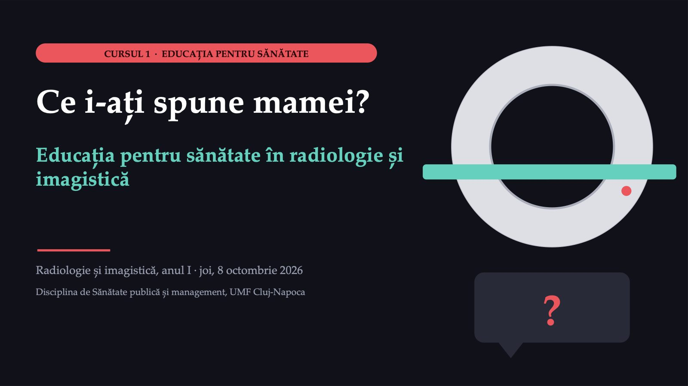
1 / 40Un copil de șase ani a căzut de pe bicicletă
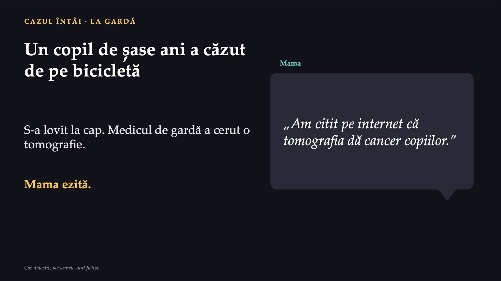
2 / 40Ce i-ați spune mamei?
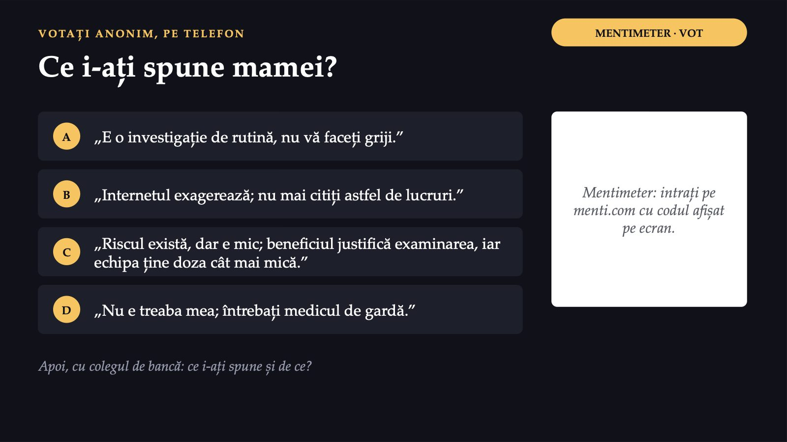
3 / 40Un răspuns care o respectă pe mamă
![UN RĂSPUNS PROVIZORIU Un răspuns care o respectă pe mamă Ce îi spuneți mamei Ce se știe Cât de mare este riscul, în cifre pe care le poate înțelege De ce consideră medicul că investigația e necesară Ce face echipa ca doza să fie cât mai mică Ce face ca un sfat să meargă Un scop clar, în cuvinte obișnuite O țintă mică, măsurabilă O demonstrație și o exersare pe loc O verificare a înțelegerii Un plan legat de viața reală a persoanei O continuare după ședință Restul cursului dă nume acestor lucruri: principiile, scopurile, abordările, direcțiile de orientare și cerințele educației pentru sănătate.](diapozitive/C01/004.jpg) 4 / 40
4 / 40Pacientul programat la rezonanța magnetică
 5 / 40
5 / 40Educația pentru sănătate
 6 / 40
6 / 40Traseul din parc și lecția despre traseu
![DOUĂ EXPRESII, NU UNA Traseul din parc și lecția despre traseu Promovarea sănătății legile · mediul · serviciile · comunitatea Educația pentru sănătate: învățarea Carta de la Ottawa, 1986: promovarea sănătății este procesul prin care oamenii devin capabili să dobândească un control mai mare asupra sănătății lor și să și-o îmbunătățească. Traseul marcat pentru mers în parc: promovarea sănătății. Lecția de zece minute despre cum mergeți pe traseu fără să vă suprasolicitați genunchii: educație pentru sănătate.](diapozitive/C01/007.jpg) 7 / 40
7 / 40Colaborarea, screeningul, radioprotecția
![ÎNTREBARE PENTRU SALĂ DE CE ARE NEVOIE RADIOLOGIA DE EDUCAȚIE Colaborarea, screeningul, radioprotecția Colaborarea Pacientul care înțelege de ce i se cere o anumită poziție sau o anumită respirație colaborează. Screeningul Femeia invitată la o mamografie află, pe înțelesul ei, la ce folosește examinarea și ce înseamnă un rezultat care cere investigații suplimentare. Radioprotecția Pacientul află de ce se folosește un șorț de protecție și de ce trebuie să spună dacă ar putea fi însărcinată. Colegii învață să își protejeze propria sănătate. Unde, în ziua voastră de lucru, ar conta cel mai mult ca pacientul să fi înțeles?](diapozitive/C01/008.jpg) 8 / 40
8 / 40Limbaj simplu, întrebări deschise, verificare prin reformulare
![TREI TEHNICI Limbaj simplu, întrebări deschise, verificare prin reformulare Limbajul simplu Propoziții scurte, cuvinte obișnuite, o singură idee principală. Termenii de specialitate rămân pentru fișa medicală. Întrebările deschise Cele la care nu se poate răspunde cu „da” sau „nu”: „Cum ați face acasă?”, „Ce v-ar putea opri și cum ocoliți piedica?” Verificarea prin reformulare Nu „Ați înțeles?”. Persoana spune cu cuvintele ei ce va face. În imagistică: „Spuneți-mi, vă rog, ce faceți când vă cer să nu mai respirați.” Întrebările deschise scot la iveală piedicile pe care pacientul nu le spune singur.](diapozitive/C01/009.jpg) 9 / 40
9 / 40Pregătirea pentru rezonanță
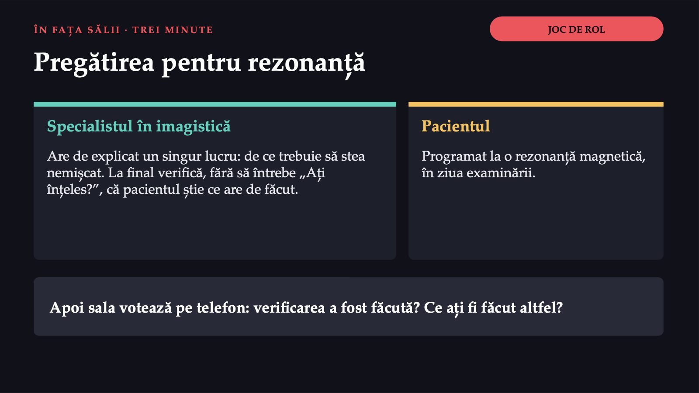
10 / 40Ce verifică și ce nu verifică nimic
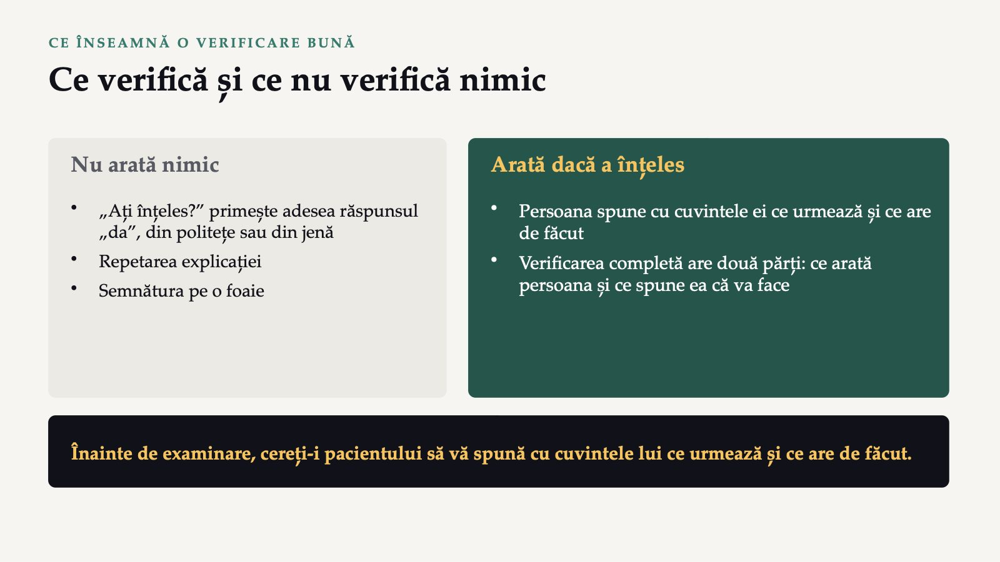
11 / 40Pregătirea cerută de protocolul secției: ce lipsește?
![ÎNTREBARE PENTRU SALĂ DE CE NU RESPECTĂ PACIENTUL PREGĂTIREA? Pregătirea cerută de protocolul secției: ce lipsește? Știe și poate? Știe ce analize se cer înainte de substanța de contrast și ce nu are voie să poarte în examinare? Are unde și când? Are cum să facă la timp analizele cerute? Are un loc și un moment pentru pregătire? Vrea? Îi este teamă de examinare? Crede că pregătirea nu contează? Regula practică: când un comportament nu apare, verificați întâi ce lipsește (știe? are unde? vrea?) și interveniți exact acolo.](diapozitive/C01/012.jpg) 12 / 40
12 / 40Unu la unu, grupul, comunitatea, mesajele publice
![FORMELE DE EDUCAȚIE · „ABORDĂRILE” DIN FIȘĂ Unu la unu, grupul, comunitatea, mesajele publice Individuală Adaptare maximă; ajunge la puțini și cere mai mult timp. De grup Eficiență și motivație între colegi; nivelurile diferite cer adaptări. Comunitară Cartier, școală, loc de muncă: acoperire mare, dar depinde de parteneri și de locuri. Mesaje publice Afișe, mesaje la telefon: ieftine și ajung la mulți, dar nu asigură învățarea practică. Fișa le numește „abordări”. Mesajele publice sunt un instrument al abordării populaționale: același mesaj pentru toți, într-un mediu care face alegerea sănătoasă mai ușoară.](diapozitive/C01/013.jpg) 13 / 40
13 / 40Trei niveluri, aceeași cerere
![DE CE O CER OMS ȘI UNIUNEA EUROPEANĂ Trei niveluri, aceeași cerere OMS Europa Programul de lucru 2020–2025, apoi programul 2026–2030, adoptat în unanimitate în octombrie 2025 de cele 53 de state ale regiunii. Uniunea Europeană EU4Health, 2021–2027: primul obiectiv general este promovarea sănătății și prevenirea bolilor. România Strategia națională de sănătate 2023–2030: educația pentru sănătate lipsește sau este furnizată „doar punctual sub forma unor mesaje de cele mai multe ori ambigue”. Toate cer același lucru: prevenție și educație pentru sănătate aproape de oameni. Programul european de lucru al OMS; Regulamentul (UE) 2021/522; Strategia națională de sănătate 2023–2030, HG nr. 1004/2023.](diapozitive/C01/014.jpg) 14 / 40
14 / 40Patru reguli ale unei educații sigure și corecte
![SIGURANȚA ȘI ETICA Patru reguli ale unei educații sigure și corecte Consimțământul Explicați ce faceți, cât durează, ce riscuri mici există. Persoana se poate opri oricând. Datele Numai ce e necesar; rezultatele se raportează fără nume, iar fișele se păstrează în siguranță. Spațiul și regulile Un spațiu fără obstacole și reguli afișate la vedere, cunoscute de toți. Semnele de alarmă Durere în piept, lipsă severă de aer, amețeală puternică: persoana este îndrumată către medic. Semnele de alarmă sunt o regulă de siguranță a materialelor disciplinei, nu un ghid clinic.](diapozitive/C01/015.jpg) 15 / 40
15 / 40Ce ar trebui să poată face pacientul
![SCOPURILE ÎN IMAGISTICĂ Ce ar trebui să poată face pacientul Scopul general: oamenii să poată lua singuri decizii bune pentru sănătatea lor și să le poată pune în practică. cunoștințe corecte deprinderi simple motivație decizii informate recunoașterea semnelor de alarmă 1 Înțelege de ce face investigația. 2 Știe cum să se pregătească, după protocolul secției: analizele cerute înainte de substanța de contrast, fără obiecte metalice. 3 Colaborează în timpul examinării: stă nemișcat, își ține respirația la comandă. 4 Știe ce urmează după. La screening, de exemplu la mamografie: femeia înțelege ce înseamnă un rezultat care cere investigații suplimentare, ca să nu îl confunde cu un diagnostic.](diapozitive/C01/016.jpg) 16 / 40
16 / 40Obiectivul măsurabil
![TERMENUL NOU 2 DIN 3 Obiectivul măsurabil O țintă scrisă astfel încât, la o dată stabilită, oricine să poată spune „da, s-a întâmplat” sau „nu, încă nu”. Ce anume se schimbă Cât La cine Până când Cum se măsoară Scopul arată direcția; obiectivul arată dacă ați ajuns. Obiectivul descrie un rezultat la persoană, nu ce face profesionistul. Fără obiectiv, educația rămâne o bună intenție: nu știți dacă a mers și nu știți ce să schimbați. În varianta disciplinei: specific, măsurabil, realizabil, relevant și încadrat în timp (acronimul englezesc SMART).](diapozitive/C01/017.jpg) 17 / 40
17 / 40De la scop la obiectiv, în radiologie
 18 / 40
18 / 40Încă un obiectiv pentru același scop
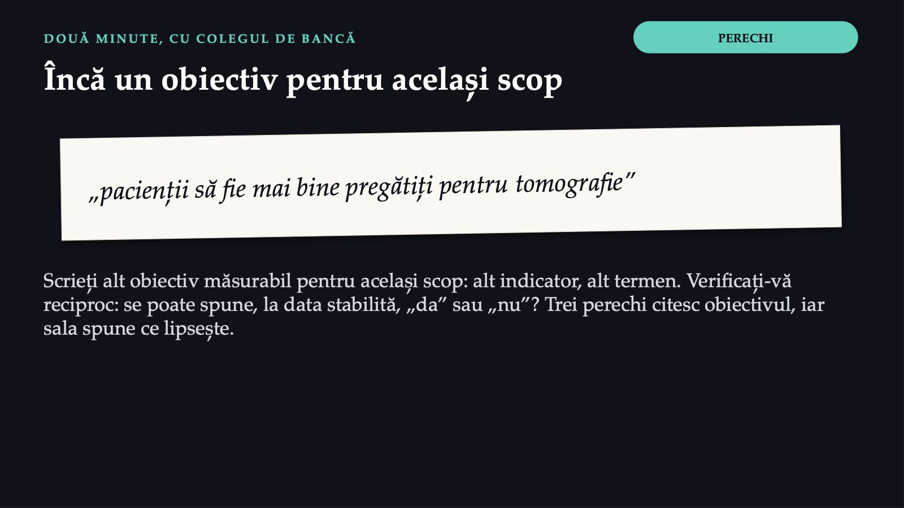
19 / 40Pauză
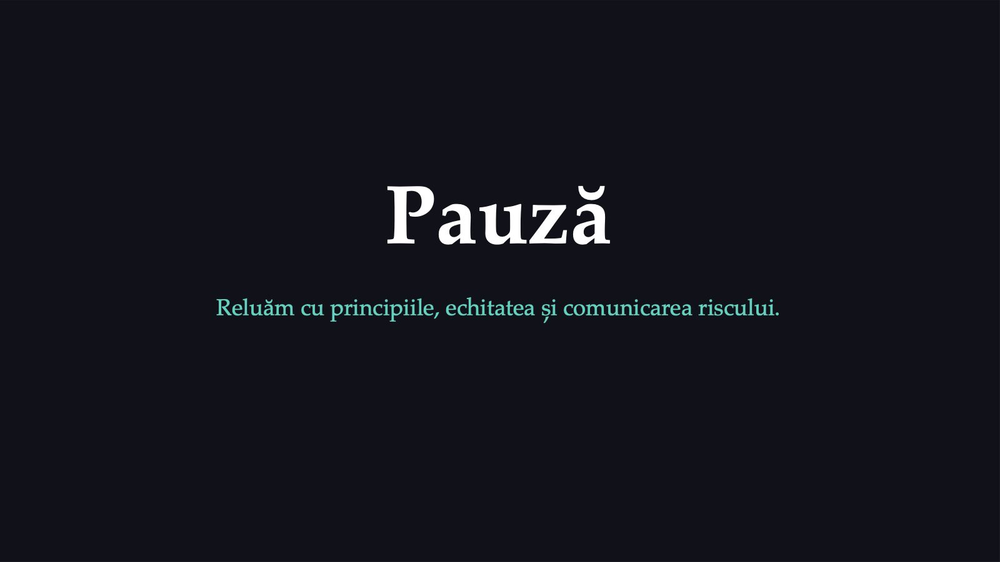
20 / 4020
![PRINCIPII Cum învață adulții și cum scriem pe înțelesul tuturor Patru consecințe practice 1 Spuneți de ce. 2 Porniți de la experiența persoanei: „Ce ați mai încercat până acum? Ce a mers?” 3 Lucrați pe probleme reale. 4 Construiți planul împreună: persoana alege ora, locul, felul în care își notează. 20 criterii notate, plus 4 întrebări introductive: indicele de comunicare clară al CDC, pentru materialele de comunicare publică. Mesajul principal stă la început. Acțiunile cerute sunt spuse exact. Cifrele sunt explicate. Imaginile ajută, nu decorează. Ideea e legată de numele lui Malcolm Knowles; termenul „andragogie” a fost criticat, pentru că o parte din principii se aplică și copiilor.](diapozitive/C01/021.jpg) 21 / 40
21 / 401,3 miliarde
 22 / 40
22 / 40Educația singură nu ajunge
![ÎNTREBARE PENTRU SALĂ ABORDĂRILE ȘI CARTA DE LA OTTAWA Educația singură nu ajunge Politici publice favorabile sănătății Medii care sprijină sănătatea Acțiunea comunitară Dezvoltarea deprinderilor personale ← educația pentru sănătate Reorientarea serviciilor de sănătate Carta de la Ottawa, 1986: cinci domenii de acțiune ale promovării sănătății. Educația pentru sănătate stă în domeniul dezvoltării deprinderilor personale, alături de celelalte patru, nu în locul lor. Ce combinație de abordări ați folosi pentru pregătirea la tomografie?](diapozitive/C01/023.jpg) 23 / 40
23 / 40Fișa cere „direcții de orientare”: sunt patru
![DIRECȚIILE DE ORIENTARE Fișa cere „direcții de orientare”: sunt patru 1 Comunicarea riscului și implicarea comunității Ce știm, ce nu știm încă, ce facem acum. 2 Educația digitală, datele și accesibilitatea Datele despre sănătate; conținut accesibil. 3 Informațiile false Infodemia, verificarea, corectarea unui mit. 4 Direcțiile integrate Același mesaj în cabinet, la școală, la locul de muncă, în spațiile publice și în aplicații. Sursele oficiale nu au o listă unică a direcțiilor; materialele disciplinei le grupează în patru.](diapozitive/C01/024.jpg) 24 / 40
24 / 40Ce știm, ce nu știm încă, ce facem acum
![DIRECȚIA 1 · COMUNICAREA RISCULUI Ce știm, ce nu știm încă, ce facem acum Ce știm Ce se cunoaște, spus simplu. Ce nu știm încă Spus deschis, fără să ascundeți incertitudinea. Ce facem acum Pașii concreți pe care îi poate urma fiecare. Când apare un risc (un val de căldură, o apă suspectă la bazin, o boală respiratorie care circulă): transparență, același mesaj pe toate canalele, recunoașterea deschisă a incertitudinii. Ascultați întrebările oamenilor și construiți mesajele împreună cu ei, nu doar le transmiteți.](diapozitive/C01/025.jpg) 25 / 40
25 / 4010 000
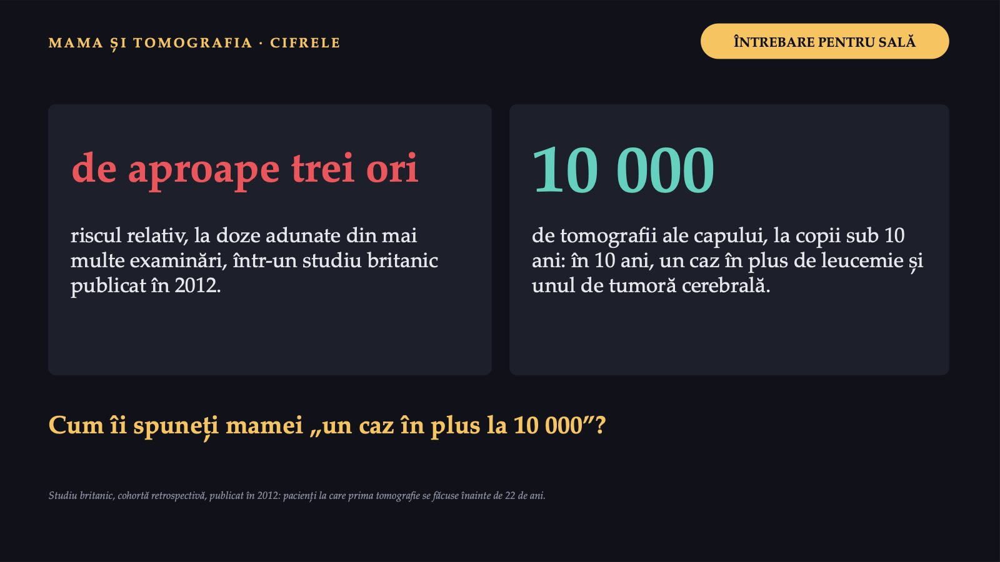
26 / 40Riscul există, este mic, iar echipa îl ține cât mai mic
 27 / 40
27 / 40Imaginea și rezultatul sunt date despre sănătate
![DATELE PACIENTULUI Imaginea și rezultatul sunt date despre sănătate REGULAMENTUL (UE) 2016/679 Art. 9 alin. (1): „se interzice prelucrarea” datelor „privind sănătatea”. Art. 9 alin. (2) lit. (h): excepție pentru prelucrarea necesară diagnosticului medical sau furnizării asistenței ori a tratamentului medical, cu garanțiile de la alin. (3). Art. 5 alin. (1) lit. (c): datele trebuie să fie „adecvate, relevante și limitate la ceea ce este necesar în raport cu scopurile în care sunt prelucrate”. Un rezultat trimis pe o aplicație de mesagerie personală poate încălca aceste reguli. La fel, o imagine postată pentru „un caz interesant”. O imagine din care s-a șters doar numele poate rămâne identificabilă: după dată, spital sau detaliile din imagine. Urmați procedura spitalului.](diapozitive/C01/028.jpg) 28 / 40
28 / 40Un rezultat pe care îl poate citi oricine
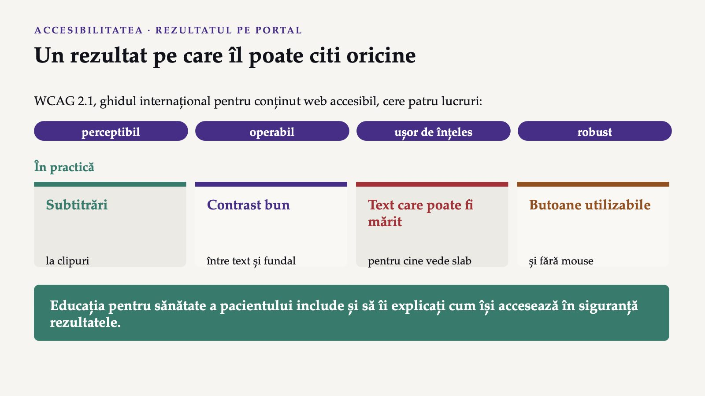
29 / 40Infodemia
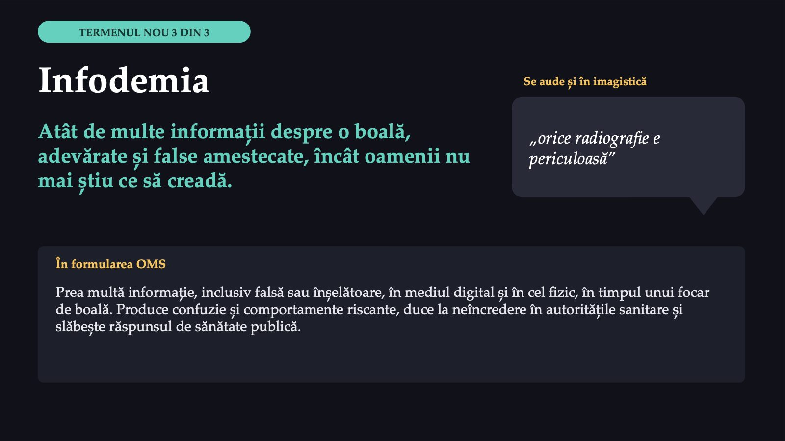
30 / 40Un mit despre radiații pe care l-ați auzit, de la pacienți sau de la cunoscuți
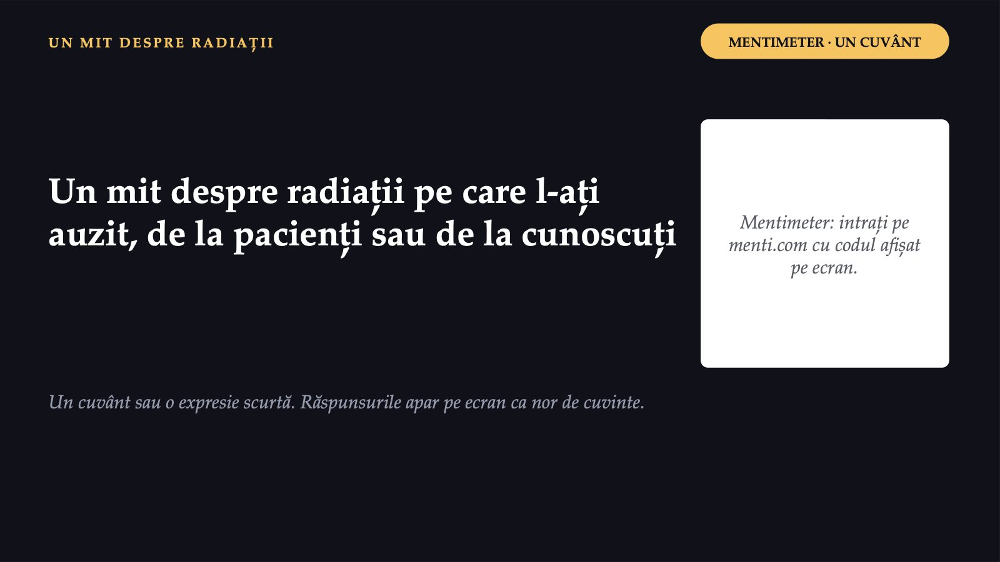
31 / 40Înainte să credeți sau să distribuiți
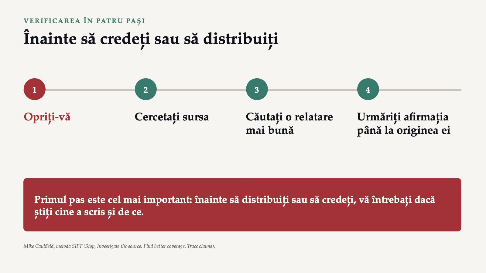
32 / 40Adevăr, mit, adevăr
![CORECTAREA UNUI MIT Adevăr, mit, adevăr 1 Adevărul întâi Spuneți ce este adevărat, simplu. 2 Mitul, scurt Numit clar ca fals. 3 Din nou adevărul Cu ce face omul acum. Model, după fișa OMS despre durerea de spate „Pentru durerea de spate obișnuită, exercițiile care vă ajută să vă mișcați din nou fac parte din tratament. Circulă ideea că, atunci când vă doare spatele, este mai sigur să nu vă mișcați; recomandările OMS merg în sens opus.” Acum: alegeți un mit din norul de cuvinte și corectați-l în această ordine. Mitul nu se repetă de mai multe ori decât adevărul. Recomandările lui Lewandowsky și colaboratorii pentru corectarea informațiilor false; fișa OMS despre durerea de spate.](diapozitive/C01/033.jpg) 33 / 40
33 / 40Radiațiile tomografului pot dăuna copiilor
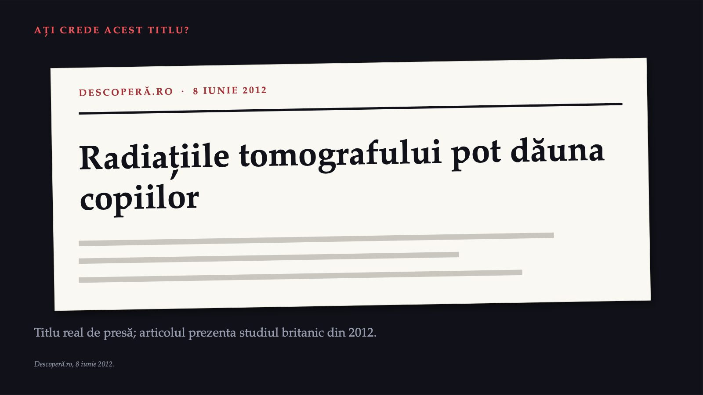
34 / 40Mama față de echipa de radiologie
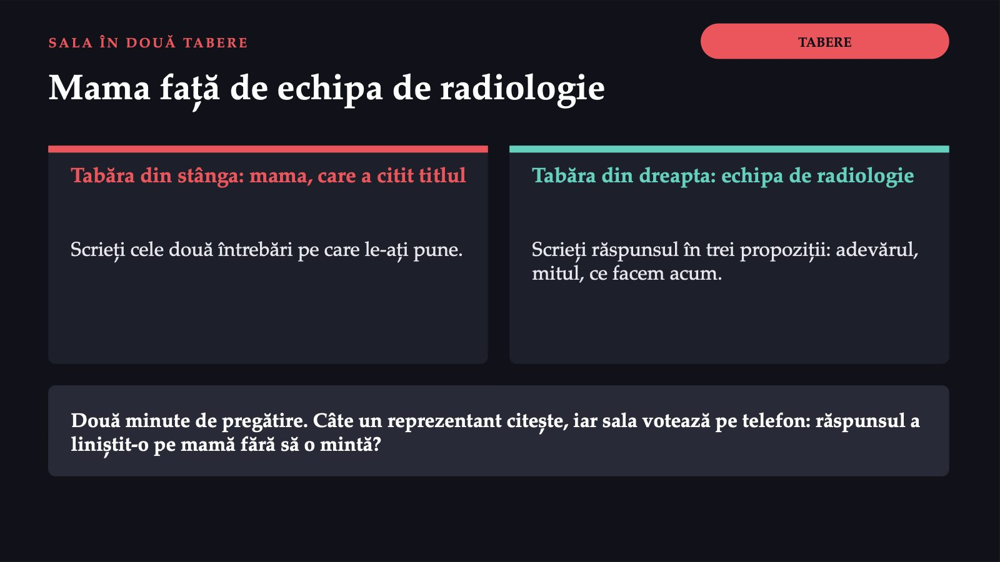
35 / 40Titlul nu este fals. Ce lipsește din el?
![RĂSPUNSUL Titlul nu este fals. Ce lipsește din el? Doza Titlul nu spune nimic despre doză: studiul a estimat un risc aproape triplu la doze adunate din mai multe examinări. Riscul absolut Titlul dă riscul relativ și ascunde riscul absolut: un caz în plus de leucemie și unul de tumoră cerebrală la 10 000 de tomografii ale capului, la copiii sub 10 ani, în 10 ani. Riscul de a nu face investigația Titlul nu spune nimic despre riscul de a nu face o investigație necesară. Pe înțelesul mamei: riscul există, este mic, iar echipa îl ține cât mai mic. Descoperă.ro, 8 iunie 2012; studiul britanic publicat în 2012.](diapozitive/C01/036.jpg) 36 / 40
36 / 40Cinci cerințe minime
 37 / 40
37 / 40Înainte de examinare, cereți-i pacientului să vă spună cu cuvintele lui ce urmează și ce are de făcut.
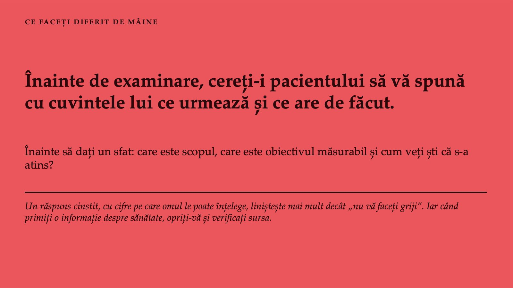
38 / 40Educația pentru sănătate în imagistică: zece întrebări
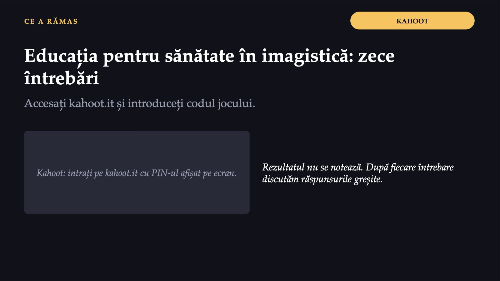
39 / 40Trei întrebări pentru final
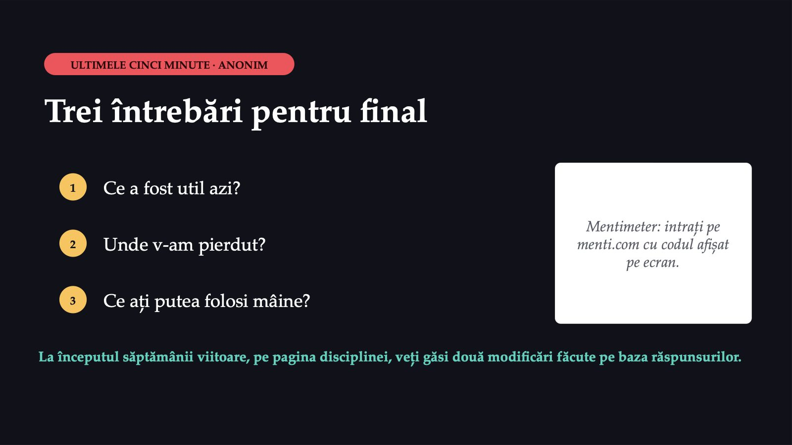
40 / 40Săgeți sau spațiu: navigare · O: vedere de ansamblu · N: notele prezentatorului · F: ecran complet · Esc: închidere